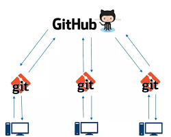

Yazılım dilleri, farklı ihtiyaçları karşılamak, çeşitli platformlarda çalışmak, belirli problemleri çözmek veya belirli türdeki projelere uygun araçlar sunmak için geliştirilmiştir. Bu farklılıklar genellikle şu noktalarda ortaya çıkar:
Özelleştirme ve Uyum
: Farklı diller, farklı gereksinimlere ve kullanım senaryolarına uygunluk sağlar. Örneğin, web geliştirme için JavaScript, bilimsel hesaplamalar için Python, sistem seviyesi programlama için C/C++ gibi.
Performans
: Bazı diller hızlı çalışırken bazıları daha yüksek seviyede soyutlama ve kullanım kolaylığı sağlar. Performans, belirli bir dilin seçilmesinde önemli bir faktördür.
Topluluk ve Ekosistem
: Bazı diller, büyük bir geliştirici topluluğu ve geniş bir kütüphane/araç seti ile desteklenir. Bu da o dili tercih edilebilir kılar.
Yeni Gereksinimler ve Teknoloji
: Teknolojinin hızla değişmesiyle, yeni diller belirli ihtiyaçları karşılamak veya yeni teknolojilere uygun araçlar sunmak için ortaya çıkar.
Bu çeşitlilik, farklı projelerin ihtiyaçlarına daha iyi cevap verebilmek ve geliştiricilere daha geniş bir seçenek yelpazesi sunabilmek adına olumlu bir durumdur. Farklı dillerin farklı güçlü yönleri olduğu için, her dilin belirli bir nişte başarılı olduğunu söylemek mümkün.
Hangi yazılım dilini seçeceğimi nereden bilebilirim?
Yazılım dilini seçerken göz önünde bulundurulması gereken birkaç faktör var:
Projenin Gereksinimleri
: Hangi tür bir proje üzerinde çalıştığınız büyük önem taşır. Web geliştirme, veri analizi, mobil uygulama, oyun geliştirme gibi farklı alanlar farklı dilleri gerektirebilir.
Performans
: Projede performans kritikse, dilin bu açıdan ne kadar etkili olduğunu değerlendirmek önemlidir. Bazı diller daha hızlı çalışabilir.
Topluluk ve Kaynaklar
: Geniş bir topluluğa ve kapsamlı belgelere, kütüphanelere, çerçevelere sahip olan diller, sorunlarla karşılaştığınızda daha fazla yardım almanızı sağlar.
Öğrenme Kolaylığı
: Dilin karmaşıklığı, öğrenme sürecinizi etkiler. Bazı diller, özellikle başlangıç seviyesinde daha basit ve anlaşılır olabilir.
Gelecek Beklentisi
: Teknoloji hızla değişiyor, bu yüzden seçtiğiniz dilin uzun vadede de kullanılabilirliği ve gelişim potansiyeli önemli.
Hangi dili seçeceğinizi belirlemek için, projenizin gereksinimlerini, hedef kitlenizi ve kullanım senaryolarını dikkate almalısınız. Genellikle birden fazla dil öğrenmek ve farklı dillerin avantajlarını deneyimlemek faydalı olabilir. Başlangıçta, çok popüler olan dillerden birini seçmek ve ardından projenizin gereksinimlerine göre özelleştirmek genellikle iyi bir başlangıç olabilir. Bu süreçte pratik yaparak, projeler geliştirerek ve topluluklardan destek alarak dil seçimini daha iyi anlayabilirsiniz.

Nesne yönelimli programlama neden geliştirilmiştir?
Nesne yönelimli programlama (OOP), yazılım geliştirmede bir paradigmadır ve birçok programlama dilinde kullanılır. OOP'nin ortaya çıkmasının temel nedenleri şunlardır:
Daha İyi Organizasyon ve Yönetim
: OOP, gerçek dünya nesnelerini programlamada kullanmamıza izin verir. Gerçek dünyadaki nesneleri (araba, kitap, insan vb.) programlamada temsil edebiliriz. Bu, karmaşık sistemleri daha iyi organize etmemizi ve yönetmemizi sağlar.Kodun Tekrar Kullanılabilirliği
: OOP, bir kez yazılan kodun tekrar kullanılabilirliğini artırır. Nesnelerin yeniden kullanılabilir bileşenler olması, farklı projelerde veya farklı kısımlarda kullanılmalarını kolaylaştırır.Modülerlik ve Bakım Kolaylığı
: Nesne yönelimli programlama, kodun modüler olmasını sağlar. Yani, kod farklı modüllerde ve sınıflarda düzenlenir. Bu da kodun bakımını ve güncellemelerini kolaylaştırır.Gerçek Dünya Problemlerini Modelleme
: Nesne yönelimli programlama, gerçek dünya problemlerini daha iyi modelleme ve çözme yeteneği sunar. Bu, yazılım geliştiricilerinin karmaşık sistemleri daha iyi anlamasına ve ele almasına olanak tanır.Veri ve İşlemlerin Birleştirilmesi
: OOP, verileri ve bu veriler üzerinde işlemleri birleştirir. Nesneler hem veriyi hem de onunla ilgili işlemleri içerir. Bu da daha tutarlı ve organize bir yapı oluşturur.Genel olarak, OOP kodun daha düzenli, modüler, tekrar kullanılabilir ve bakımı daha kolay olmasını sağlar. Bu nedenle, büyük ve karmaşık yazılım projelerinde tercih edilir ve birçok modern programlama dilinin temelini oluşturur.
Fonksiyonel programlama nedir ve hangi durumlarda kullanılır?
Fonksiyonel programlama, hesaplamaları matematiksel fonksiyonların birleşimi olarak ele alan bir programlama paradigmasıdır. Bu paradigma, değişkenlerin değerlerinin değişmez olduğu ve işlemlerin yan etkiler yaratmadığı bir yaklaşımı benimser. Fonksiyonel programlamada, fonksiyonlar birinci sınıf vatandaşlardır, yani diğer fonksiyonlara parametre olarak geçirilebilir veya döndürülebilir.
Fonksiyonel programlama, şu durumlarda kullanılabilir:
Paralel İşlemler ve Eşzamansız Programlama
: Fonksiyonel programlama, paralel hesaplamaları ve eşzamansız programlamayı kolaylaştırır. Bu, çoklu işlemci veya dağıtık sistemlerde performansı artırabilir.
Yüksek Seviyeli Soyutlama
: Fonksiyonel programlama, yüksek seviyeli soyutlama sunar. Bu, karmaşık problemleri basit, açık ve okunabilir kod parçalarına dönüştürmeyi sağlar.
Veri Akışı İşlemleri
: Veri işleme, dönüştürme ve filtreleme gibi işlemler fonksiyonel programlamanın güçlü yönlerindendir. Bu özellikle büyük veri işleme ve veri analizi gibi alanlarda faydalı olabilir.
Durumsuz Programlama
: Fonksiyonel programlama, yan etkileri azaltır veya ortadan kaldırır. Bu durumsuz yapı, kodun daha güvenli, test edilebilir ve hata ayıklamasının kolay olmasını sağlar.
Reaktif Programlama
: Fonksiyonel programlama, reaktif sistemlerde ve olay tabanlı programlarda kullanılabilir. Bu tür sistemler, sürekli olarak değişen durumlara hızlı tepki verebilir.
Fonksiyonel programlama, özellikle paralel hesaplama, veri işleme, soyutlama ve durumsuz programlama gibi alanlarda kullanılır. Ancak, her tür problem için uygun olmayabilir ve geleneksel programlama paradigmasına alışmış geliştiriciler için öğrenmesi bazen zor olabilir.
Veritabanı nedir ve neden önemlidir?


Veritabanı, yapılandırılmış bir şekilde veri depolayan, bu verilere erişimi sağlayan ve bunlar üzerinde işlemler gerçekleştiren sistem veya yazılım koleksiyonudur. Veritabanları, bilgiyi düzenli bir şekilde saklamak, yönetmek ve kullanmak için kullanılır.
Önemi birkaç açıdan ortaya çıkar:
Veri Depolama ve Yönetme
: Veritabanları, büyük miktardaki veriyi organize etmek ve saklamak için kullanılır. Bu, verilerin kaybolmasını önler ve erişimi kolaylaştırır.
Veri Entegrasyonu
: Veritabanları, farklı kaynaklardan gelen verileri birleştirmek ve ilişkilendirmek için kullanılır. Bu, veriler arasında bağlantılar kurmayı ve anlamlı bilgi elde etmeyi sağlar.
Veri Güvenliği
: Veritabanları, veri güvenliği için önemli bir rol oynar. Veri erişimini kontrol etmek, yetkilendirmek ve verileri korumak için güvenlik önlemleri alınabilir.
Veri Analizi ve Raporlama
: Veritabanları, veri analizi ve raporlama için veri sağlar. Bu, iş kararları almak için verilerin anlamlı şekilde analiz edilmesini ve raporlanmasını sağlar.
Uygulama Entegrasyonu
: Çoğu uygulama, bir veritabanına erişerek veri alışverişi yapar. Bu, uygulamalar arasında veri akışını ve uyumlu bir şekilde çalışmayı sağlar.
Veritabanları, işletmeler için kritik öneme sahiptir çünkü bilgi her zaman onların en değerli varlıklarından biridir. Doğru şekilde kullanıldığında, veritabanları veri yönetimi, veri analizi ve iş süreçlerinin iyileştirilmesi gibi birçok alanda fayda sağlar. Bu nedenle, güvenilir, erişilebilir ve performanslı bir veritabanı kurmak ve yönetmek, bir organizasyonun veri tabanlı kararlar almasını ve başarılı olmasını sağlayabilir.
SQL ve NoSQL veritabanları arasındaki temel farklar nelerdir?
SQL (Structured Query Language) ve NoSQL, farklı veritabanı türlerini ifade eder. Temel farklar şunlardır:
Veri Modeli
:
SQL veritabanları ilişkisel veri tabanlarıdır ve tablo yapısını kullanır. Veri, tablolar arası ilişkilerle birleştirilir.
NoSQL veritabanları çeşitli veri modelleri sunar: belgelik (document-based), sütun tabanlı (column-based), anahtar-değer (key-value), grafik tabanlı gibi. Bu modeller, farklı veri yapılarına ve ilişkilere olanak tanır.
Ölçeklenebilirlik
:
SQL veritabanları genellikle dikey (vertical) ölçeklenebilirlik üzerine kuruludur. Yani, daha fazla işlemci veya bellek eklemek gibi tek bir sunucuyu daha güçlü hale getirmeye dayanır.
NoSQL veritabanları genellikle yatay (horizontal) ölçeklenebilirlik sunar. Bu, veritabanını daha fazla sunucuya dağıtarak büyümesini sağlar.
Esneklik
:
SQL veritabanları şemaya (schema) sıkı sıkıya bağlıdır. Veri yapıları önceden tanımlanmış ve ilişkilerle belirlenmiştir.
NoSQL veritabanları genellikle şemaya esneklik sunar. Yani, veri yapısı daha dinamik olabilir ve değişebilir.
Tutarlılık ve Performans
:
SQL veritabanları ACID (Atomicity, Consistency, Isolation, Durability) özelliklerini destekler, bu da veri bütünlüğü ve tutarlılık sağlar. Bu nedenle, transaksiyonel işlemler için sıklıkla tercih edilirler.
NoSQL veritabanları daha çok performans, ölçeklenebilirlik ve esneklik üzerine odaklanır. Bazı durumlarda, bu sistemler ACID özelliklerinden bazılarını feda edebilir.
Kullanım Senaryoları
:
SQL veritabanları genellikle yapılandırılmış ve karmaşık sorgular için kullanılır. Örneğin, ilişkisel veri tabanları, finansal sistemler, ERP (Enterprise Resource Planning) sistemleri için sıklıkla tercih edilir.
NoSQL veritabanları genellikle büyük veri depolama, analiz, içerik yönetimi, oturum yönetimi gibi alanlarda tercih edilir. Büyük ölçekli veri işleme ve dağıtık sistemler için uygundurlar.
Her iki veritabanı türü de farklı avantajlara sahiptir ve kullanım senaryolarına göre tercih edilir. Projenizin ihtiyaçlarına ve gereksinimlerine bağlı olarak, hangi veritabanı türünün daha uygun olduğunu belirlemek önemlidir.
RESTful ve SOAP nedir?
RESTful ve SOAP, web hizmetlerini uygulamak için kullanılan iki farklı protokoldür.
SOAP (Simple Object Access Protocol)
:
SOAP, yapılandırılmış ve standartlaştırılmış bir iletişim protokolüdür. Genellikle XML tabanlıdır ve iletişim için HTTP, SMTP gibi farklı protokolleri kullanabilir. Genellikle, web hizmetlerinde (web services) ve çeşitli uygulama entegrasyonlarında kullanılır. SOAP, sıkı veri tiplemesi, ACID özellikleri, güvenlik ve işlemler için standartlar sunar. Ancak, SOAP protokolü karmaşık olabilir ve esnekliği azaltabilir.
RESTful (Representational State Transfer)
:
RESTful, dağıtık sistemlerde kaynakları temsil etmek ve bunlar üzerindeki işlemleri gerçekleştirmek için kullanılan bir mimari tarzdır. REST, HTTP protokolü üzerinde çalışır ve genellikle JSON veya XML gibi formatları kullanarak veri alışverişi yapar. RESTful servisler, kaynakları benzersiz bir URI ile temsil eder ve bu kaynaklara HTTP yöntemlerini (GET, POST, PUT, DELETE) kullanarak erişim sağlar. RESTful, kolay anlaşılır, esnek ve genellikle daha hafif bir yapıya sahiptir.
Farklar şunlardır:
SOAP, genellikle karmaşık ve ağır bir yapıya sahipken, RESTful daha hafif ve esnektir.
SOAP, sıkı standartlar ve güvenlik özellikleri sunar.
RESTful ise genellikle daha açık standartlar ve esneklik sunar.
SOAP, XML tabanlıdır, RESTful ise JSON veya XML gibi formatları kullanabilir.
Hangi protokolün kullanılacağı, projenin gereksinimlerine, var olan altyapıya ve performans beklentilerine bağlıdır. SOAP, daha katı güvenlik ve veri bütünlüğü gerektiren ortamlarda tercih edilebilirken, RESTful daha hafif, esnek ve web tabanlı sistemlerde yaygın olarak kullanılır.
MVC (Model-View-Controller) tasarım deseni nedir?
MVC, Model-View-Controller (Model-Görünüm-Kontrolcü) tasarım deseni, birçok yazılım uygulamasında kullanılan ve yazılım bileşenlerini mantıksal olarak ayrıştırarak daha iyi organize etmeyi amaçlayan bir yapıdır.
Bu desen, şu üç temel bileşenden oluşur:
Model (Model)
: Bu bileşen, verilerin işlendiği, depolandığı ve yönetildiği kısmı ifade eder. Genellikle veritabanı işlemleri, veri manipülasyonu ve iş kurallarını içerir. Model, genellikle uygulamanın mantıksal omurgasını oluşturur.
View (Görünüm)
: Bu bileşen, kullanıcı arayüzünün görsel temsilini sağlar. Kullanıcıya sunulan bilgileri gösterir ve genellikle kullanıcı etkileşimini temsil eder. HTML, CSS, ve kullanıcı arayüzü kodları genellikle View katmanında yer alır.
Controller (Kontrolcü)
: Bu bileşen, kullanıcının girişlerini işler, Model ve View arasındaki etkileşimi yönetir. Kullanıcının yaptığı istekleri karşılar, uygun Model işlemlerini çağırır ve sonuçları View'a iletir. Genellikle URL yönlendirme ve iş mantığı işlemleri burada gerçekleşir.
MVC, yazılımın modüler ve yeniden kullanılabilir olmasını sağlar. Her bir bileşen kendi sorumluluk alanına sahiptir ve bu da kodun daha okunabilir, bakımı kolay ve değişime daha açık olmasını sağlar. Ayrıca, farklı ekran boyutları veya cihazlar için farklı görünümler oluşturmak, MVC'nin View kısmındaki esnekliği sayesinde daha kolaydır.
MVC, web uygulamaları, masaüstü uygulamaları ve mobil uygulamalar gibi çeşitli yazılım geliştirme alanlarında yaygın olarak kullanılan bir tasarım desenidir.
Git ve GitHub’ın temel kullanımı ve iş akışları nelerdir?
Git, dağıtık bir sürüm kontrol sistemi olarak yazılım geliştirme süreçlerinde kullanılan bir araçtır. GitHub ise Git tabanlı projeleri barındıran ve paylaşımı sağlayan bir platformdur. İşte Git ve GitHub'ın temel kullanımı ve iş akışları:
Git Temel Kullanımı:
Depo Oluşturma
: Bir proje için Git deposu oluşturmak için terminal veya Git arayüzünü kullanarak git init komutunu kullanabilirsiniz.
Dosyaları İzleme
: Proje dosyalarını Git tarafından izlenmesi için git add dosya_adı komutunu kullanarak veya tüm dosyaları eklemek için git add . komutunu kullanabilirsiniz.
Commit Yapma
: İzlenen dosyaları bir "commit" ile değişiklik geçmişine kaydetmek için git commit -m "Commit açıklaması" komutunu kullanabilirsiniz.
Branşlar (Branches) Oluşturma ve Birleştirme
: Projenizin farklı versiyonları üzerinde çalışmak için farklı "branch"ler oluşturabilirsiniz (git branch yeni_branş). Ardından, bu branşları birleştirmek için git merge komutunu kullanabilirsiniz.
Uzak Depo İle İş Birliği
: Projenizi GitHub veya benzer bir platformda bir uzak depoya (remote repository) yüklemek için git remote add origin repo_linki ve git push -u origin ana_branş gibi komutları kullanabilirsiniz.
GitHub İş Akışları:
Fork (Çatallama)
: Bir projeyi GitHub üzerinde kendi hesabınıza kopyalayabilirsiniz. Bunu projenin sayfasında sağ üst köşedeki "Fork" butonuyla yapabilirsiniz.
Clone (Klonlama)
: Kendi hesabınıza çatalını aldığınız projeyi bilgisayarınıza kopyalamak için git clone repo_linki komutunu kullanabilirsiniz.
Branch Oluşturma ve Pull Request
: Yeni bir özellik eklemek veya bir hata düzeltmek için yeni bir branş oluşturabilirsiniz (git checkout -b yeni_branş). Ardından değişikliklerinizi tamamladıktan sonra bu değişiklikleri orijinal projeye entegre etmek için bir "Pull Request" (Çekme İsteği) açabilirsiniz.
Proje İçinde İşbirliği
: Diğer geliştiricilerle projede çalışırken, değişikliklerinizi senkronize etmek için git pull komutunu kullanabilir ve kendi değişikliklerinizi diğerlerine göndermek için git push komutunu kullanabilirsiniz.
Bu temel adımlar, Git ve GitHub'ın kullanımını özetlemektedir. Projelerinizi izlemek, değişiklikleri yönetmek ve işbirliği yapmak için bu adımları takip edebilirsiniz.


Docker ve konteyner teknolojileri nedir ve nasıl kullanılır?
Docker, konteyner tabanlı bir sanallaştırma platformudur. Konteyner teknolojisi, uygulamaları ve bağımlılıklarını bir araya getirerek, hafif, taşınabilir ve izole edilmiş ortamlarda çalışmalarını sağlar. İşte Docker ve konteyner teknolojisinin temel işleyişi ve kullanımı:
Docker Temel Kavramlar:
Container (Konteyner)
: Bir konteyner, uygulamaları ve bağımlılıkları bir araya getiren, izole edilmiş bir çalışma ortamını ifade eder. Konteynerler, hafif ve taşınabilir olduğu için farklı sistemlerde kolayca çalışabilir.
Image (İmaj)
: Bir konteynerin çalışma zamanı için gerekli olan dosyalar, kütüphaneler, kodlar ve diğer bağımlılıkları içeren bir pakettir. Docker imajları, bir temel imaj üzerine katmanlar ekleyerek oluşturulur.
Dockerfile
: Docker imajlarını oluşturmak için kullanılan metin dosyalarıdır. Bir Dockerfile, bir imajın nasıl oluşturulacağını adım adım tanımlar.
Docker Kullanımı:
Konteyner Oluşturma
: İlk adım, bir Dockerfile ile bir imaj oluşturmaktır. Bu, Dockerfile dosyasını hazırlamak ve docker build komutunu kullanarak imajı oluşturmakla yapılır.
Konteyner Başlatma
: Oluşturulan imajı kullanarak konteynerleri başlatmak için docker run komutu kullanılır. Bu, çalışan bir konteyner örneği oluşturur ve çalıştırır.
Konteyner İzleme ve Yönetme
: Çalışan konteynerleri görüntülemek, durdurmak, silmek veya başka komutlarla yönetmek için docker ps, docker stop, docker rm gibi komutlar kullanılabilir.
Docker Compose (Compose)
: Birden fazla konteynerin çalıştırılması, yapılandırılması ve yönetilmesi gereken karmaşık projeler için Docker Compose kullanılır. Bir YAML dosyası olan Docker Compose, birden çok servisi tek bir komutta yönetmeye olanak tanır.
Konteyner teknolojisi ve Docker, yazılım geliştirme, dağıtım ve uygulama izolasyonu için popüler bir seçenektir. Konteynerler, uygulamaların hızlı bir şekilde dağıtılmasını, taşınabilirliği ve konsolide edilmiş ortamlarda çalışmasını sağlar. Bu da yazılım geliştirme süreçlerini daha hızlı, güvenilir ve verimli hale getirebilir.
Mikro servisler nedir ve monolitik mimariye göre avantajları nelerdir?
Mikro servis mimarisi, büyük ve karmaşık bir uygulamayı birbirinden bağımsız çalışan küçük hizmetlere (servislere) bölen bir mimaridir. Her bir mikro servis, belirli bir işlevselliği yerine getirir ve kendi veritabanı, sunucusu ve iş mantığı gibi unsurlara sahiptir. Monolitik mimari ise bir uygulamanın tüm parçalarının tek bir yapı içinde bulunduğu geleneksel mimariye denir.
Mikro servis mimarisinin avantajları şunlar olabilir:
Modülerlik
: Mikro servisler, parçalara ayrılmış bağımsız hizmetler olduğundan, değişiklik yapmak ve bir hizmeti güncellemek daha kolaydır. Bu da geliştirme süreçlerini hızlandırabilir.
Bağımsızlıklar
: Her mikro servis kendi teknoloji yığınına ve veritabanına sahiptir. Bu, farklı hızlarda geliştirme, dağıtım ve ölçeklendirme olanağı sunar.
Ölçeklenebilirlik
: Mikro servisler, belirli hizmetlerin daha fazla veya daha az ölçeklendirilebilmesine olanak tanır. Böylece, kaynakları verimli bir şekilde kullanmak mümkün olabilir.
Dayanıklılık ve Yüksek İyileştirilebilirlik
: Tek bir hizmetin çökmesi, diğer hizmetleri etkilemez. Ayrıca, her servis kendi hata durumlarıyla başa çıkabilir ve bu, sistem genelindeki dayanıklılığı artırabilir.
Teknolojik Çeşitlilik
: Farklı hizmetler, farklı teknoloji yığınları kullanabilir. Bu da geliştiricilere teknoloji seçiminde esneklik sağlar.
Monolitik mimarinin aksine, mikro servisler mimarisi, daha büyük ve karmaşık projelerde esneklik, ölçeklenebilirlik ve hızlı gelişim gibi avantajlar sunabilir. Ancak, mikro servislerin yönetimi, iletişimi ve koordinasyonu daha karmaşık olabilir ve bu da yönetim ve operasyonel zorluklara neden olabilir. Her bir mimari yaklaşımın kendine özgü avantajları ve zorlukları vardır ve projenin gereksinimlerine, ekip yapısına ve büyüklüğüne göre tercih edilir.

Veri yapıları ve algoritmaların önemi nedir?
Veri yapıları ve algoritmalar, bilgisayar biliminde temel taşlardır ve yazılım geliştirme süreçlerinde hayati bir öneme sahiptirler. İşte bu önemin bazı nedenleri:
Veri Yönetimi
: Veri yapıları, verileri organize etmek, depolamak ve erişmek için kullanılır. Veri yapılarının etkili kullanımı, veri işleme süreçlerini optimize eder ve verilerin hızlı ve verimli bir şekilde erişilmesini sağlar.
Performans
: Veri yapıları ve algoritmalar, bir programın performansını büyük ölçüde etkiler. Veri yapıları verilerin nasıl depolandığını belirlerken, algoritmalar da bu veriler üzerinde hangi işlemlerin yapılacağını belirler. İyi seçilmiş bir veri yapısı ve algoritma, daha hızlı ve verimli bir programı mümkün kılar.
Problemleri Çözme Yeteneği
: Algoritmalar, karmaşık problemleri daha küçük ve daha yönetilebilir parçalara böler. Bu, karmaşık sorunların çözümünü daha erişilebilir ve anlaşılır hale getirir.
Yeniden Kullanılabilirlik ve Genelleme
: Veri yapıları ve algoritmaların iyi tasarlanmış olması, onları farklı senaryolarda tekrar kullanılabilir kılar. Bu, yazılım geliştirme süreçlerinde tasarruf sağlar ve kodun daha modüler olmasını sağlar.
Temel Bilgisayar Bilimi Kavramları
: Veri yapıları ve algoritmalar, bilgisayar biliminin temel taşlarıdır. Bunları anlamak, temel bilgisayar bilimi kavramlarını anlamak için önemlidir ve programlama becerilerinin temelini oluşturur.
Veri yapıları ve algoritmaların doğru bir şekilde öğrenilmesi, yazılım geliştirme sürecinde daha etkili ve verimli kod yazmaya olanak tanır. İyi bir anlayış, problemleri daha etkili bir şekilde çözmek ve programların daha iyi performans göstermesini sağlamak için kritiktir.
Agile, Scrum ve Kanban gibi çevik metodolojiler nedir?

Agile, Scrum ve Kanban, yazılım geliştirme ve proje yönetimi süreçlerini iyileştirmek ve esnekliği artırmak için kullanılan çevik metodolojilerdir. İşte bu metodolojilerin ana hatları:
Agile
:
Agile, esnek ve işbirlikçi bir yaklaşımı benimseyen bir yazılım geliştirme felsefesidir. Geleneksel yazılım geliştirme metodolojilerine göre daha esnek ve adaptif bir yapı sunar. Öncelikle müşteri memnuniyetine odaklanır, değişen gereksinimlere hızlı yanıt verir, işbirliğini teşvik eder ve sürekli olarak gelişimi önemser.
Scrum
:
Scrum, Agile'in bir alt kümesi olarak kabul edilir ve proje yönetimi için bir çerçeve sunar. Temel bileşenleri, belirli sürelerde (sprint) tekrarlanan kısa zaman dilimleri içinde işleri planlamak, gerçekleştirmek ve değerlendirmektir. Scrum takımları, ürün sahibi, Scrum Master ve geliştirici takımları gibi rollerden oluşur. Scrum, şeffaflık, denetim ve sürekli geri bildirim üzerine odaklanır.
Kanban
:
Kanban, görsel bir kart sistemi kullanarak iş akışını yöneten bir çevik metodolojidir. Her bir iş parçası bir kart veya post-it ile temsil edilir ve iş akışı tahtası üzerinde farklı aşamalardan geçer. İşlerin durumunu görsel olarak izlemek ve akışı optimize etmek için kullanılır. Ana hedefi, işleri daha verimli bir şekilde yönetmek ve aşırı yüklenmeyi engellemektir.
Bu çevik metodolojiler, esneklik, işbirliği, sürekli gelişim ve müşteri odaklılık gibi temel prensipleri paylaşır. Bununla birlikte, her biri farklı yaklaşımları ve vurguları temsil eder. Proje veya organizasyonun ihtiyaçlarına göre, Agile, Scrum veya Kanban gibi metodolojilerden biri veya birkaçı bir arada kullanılabilir veya tercih edilebilir.
DevOps nedir ve yazılım geliştirme sürecine nasıl katkıda bulunur?
DevOps, geliştirme (Development) ile işletme (Operations) arasında bir köprü kurarak yazılım geliştirme süreçlerini hızlandırmayı, otomasyonu artırmayı ve yazılım dağıtımını iyileştirmeyi amaçlayan bir kültür, işbirliği ve iş uygulama yöntemidir.
DevOps, geliştirme (Development) ile işletme (Operations) arasında bir köprü kurarak yazılım geliştirme süreçlerini hızlandırmayı, otomasyonu artırmayı ve yazılım dağıtımını iyileştirmeyi amaçlayan bir kültür, işbirliği ve iş uygulama yöntemidir. DevOps'un temel amacı, yazılımın hızlı ve sürekli bir şekilde teslim edilmesini sağlamaktır. Bu, geliştirme ve operasyon ekiplerinin işbirliği içinde çalışmasını, otomasyonu, sürekli entegrasyonu (CI - Continuous Integration), sürekli dağıtımı (CD - Continuous Deployment) ve sürekli teslimi (Continuous Delivery) içeren pratikleri benimsemesini içerir.
DevOps'un yazılım geliştirme sürecine katkıları şunlardır:
Hızlı Teslimat
: DevOps, yazılımın daha hızlı ve düzenli bir şekilde teslim edilmesini sağlar. Sürekli entegrasyon ve sürekli dağıtım gibi süreçleri otomatikleştirerek bu hızı artırır.
Yüksek Kalite
: Sürekli test ve geri bildirim mekanizmaları sayesinde yazılımın kalitesini artırır. Otomatik testler ve sürekli geri bildirim, hataların erken tespit edilmesini ve düzeltilmesini sağlar.
Esneklik ve İyileştirme
: DevOps, sürekli iyileştirme felsefesini benimser. Sürekli teslimat ve geri bildirim sayesinde süreçlerin ve ürünün sürekli olarak geliştirilmesini sağlar.
Daha İyi İletişim ve İşbirliği
: Geliştirme ve operasyon ekipleri arasında daha iyi bir işbirliği ve iletişim sağlar. Bu, hataların azalmasına, sorunların daha hızlı çözülmesine ve daha verimli bir çalışma ortamına katkıda bulunur.
Otomasyon ve Standardizasyon
: DevOps, süreçlerin otomatikleştirilmesi ve standartlaştırılmasını teşvik eder. Bu da tekrarlanabilirlik, verimlilik ve hata olasılığının azalması anlamına gelir.
DevOps, yazılım geliştirme süreçlerini daha esnek, hızlı ve verimli hale getirerek, işletmelerin rekabet avantajı elde etmesine ve müşteri memnuniyetini artırmasına yardımcı olur.